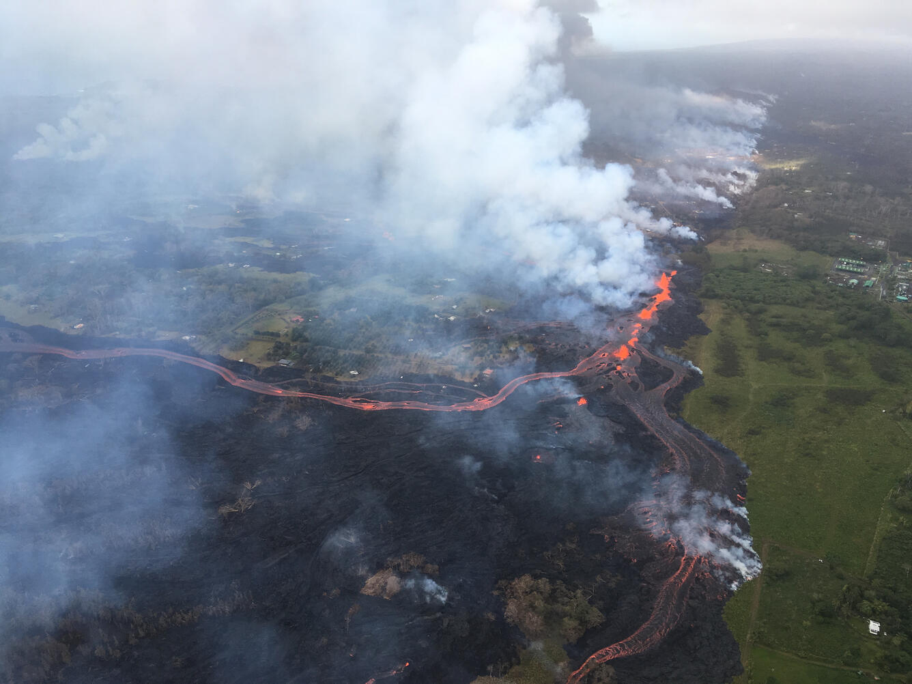
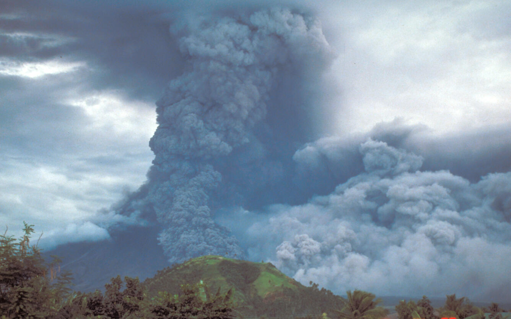
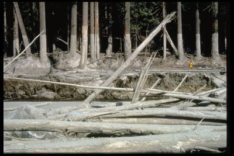
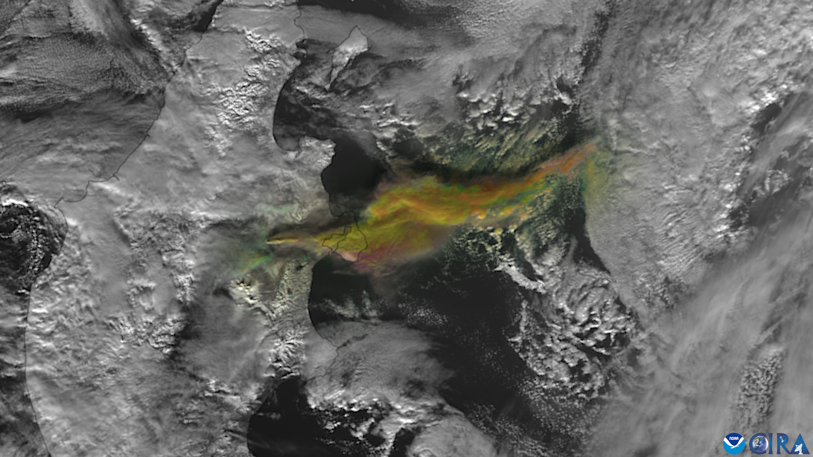
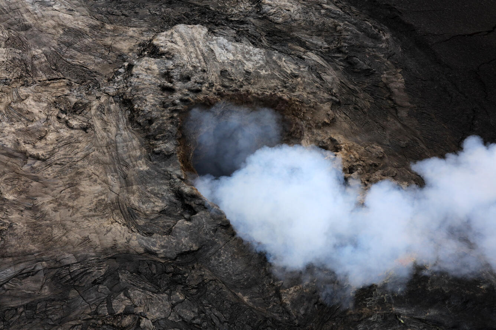

Shield Volcano
A broad volcano with gentle slopes. It forms from fluid, low-viscosity lava that spreads over long distances.
How to recognize it: Look for a wide, gently sloping shape resembling a warrior's shield.
Example: Mauna Loa, Hawaii
GEOLOGY EXPLORATION GUIDE
Learn to recognize volcano shapes, identify volcanic rocks, understand volcanic hazards, and explore volcanoes safely.
Start ExploringWELCOME, EXPLORER
Volcanoes come in different shapes and sizes. The type of lava, how it cools, and how a volcano erupts help determine its appearance and the hazards it can create.
Recognize the three major volcano forms.
Use texture and composition to identify igneous rocks.
Learn how volcanic activity affects people and places.
SECTION 01
Volcanoes can be identified by their shape, slope, and summit. Learn about the three major types below.
A broad volcano with gentle slopes. It forms from fluid, low-viscosity lava that spreads over long distances.
How to recognize it: Look for a wide, gently sloping shape resembling a warrior's shield.
Example: Mauna Loa, Hawaii

A tall, steep-sided volcano built from alternating layers of lava, ash, and other volcanic materials.
How to recognize it: Look for a steep, cone-shaped mountain with a defined summit.
Example: Mount Fuji, Japan

A large basin-shaped depression formed when a volcano's summit collapses after a major eruption or magma withdrawal.
How to recognize it: Look for a large, circular depression or crater-like basin.
Example: Crater Lake, Oregon
Use the shape clues to identify each volcano.

This volcano is tall, steep-sided, and built from layers of lava and ash.

This volcano is extremely wide and has gentle slopes formed by fluid lava.
Volcano A: Stratovolcano. Its steep cone and layered structure are characteristic of stratovolcanoes.
Volcano B: Shield volcano. Its broad profile and gentle slopes form from fluid lava flows.
SECTION 02
Igneous rocks form when magma or lava cools. Their texture and mineral composition help us identify them.
Intrusive rocks form underground and cool slowly, allowing large crystals to grow. Extrusive rocks form at or near Earth's surface and cool quickly, creating small crystals or a fine-grained texture.

Large, visible crystals. Slow cooling underground gives minerals time to grow.
Look for: Crystals that are easy to see, often with different colored minerals.
Examples: Granite, diorite, and gabbro

Small crystals or a fine-grained appearance. Rapid cooling prevents large crystals from growing.
Look for: A smooth or fine-grained surface where individual crystals are difficult to see.
Examples: Rhyolite, andesite, and basalt
Composition describes the minerals and silica content of a rock. Color can provide a clue, but it should be used with texture and other mineral characteristics.
Usually light-colored, with abundant quartz and feldspar. Generally has higher silica content.
Look for pink, white, or light gray minerals.

Has a composition between felsic and mafic rocks. Often appears medium gray.
Look for a medium-colored rock.

Rich in iron and magnesium and generally lower in silica. Often dark-colored.
Look for dark gray, black, or greenish minerals.
Combine the cooling environment with the composition to identify the rock. Intrusive and extrusive rocks can have similar chemistry but different crystal sizes.
| Composition | Intrusive (Slow Cooling) | Extrusive (Fast Cooling) |
|---|---|---|
| High silica / felsic | Granite | Rhyolite |
| Intermediate | Diorite | Andesite |
| High iron / mafic | Gabbro | Basalt |
Remember: granite, diorite, and gabbro are intrusive igneous rocks. Rhyolite, andesite, and basalt are extrusive volcanic rocks.
Use the texture and composition clues to identify each sample.

Fine-grained texture and high-silica composition.
Large visible crystals and high-iron composition.
Rock A: Rhyolite. It is extrusive and felsic, so it has fine-grained texture and high silica.
Rock B: Gabbro. It is intrusive and mafic, so it has large crystals and high iron and magnesium.
SECTION 03
Volcanic hazards can affect areas near a volcano and communities many miles away. Different volcanoes can produce different hazards.

Molten rock that flows across Earth's surface. It can burn, bury, and destroy buildings and roads.
Common with: Shield volcanoes, stratovolcanoes, and other volcanic types.

Fast-moving, extremely hot mixtures of gas, ash, and volcanic fragments that travel down volcano slopes.
Common with: Stratovolcanoes and explosive caldera-forming eruptions.

Dangerous flows of water, mud, and volcanic debris that move down valleys and river channels.
Common with: Stratovolcanoes, especially those with snow, ice, or loose volcanic ash.

Fine fragments of volcanic rock and glass blasted into the atmosphere. Ash can harm breathing, damage engines, and disrupt travel.
Common with: Explosive stratovolcanoes and caldera systems.

Gases such as sulfur dioxide and carbon dioxide can irritate lungs, create dangerous air conditions, or collect in low areas.
Common with: All volcano types, including shield volcanoes and stratovolcanoes.

Large explosive eruptions can send sulfur gases into the stratosphere, forming aerosols that reflect sunlight and temporarily cool Earth's surface.
Common with: Large explosive stratovolcano eruptions and caldera-forming eruptions.
Volcano hazards are not limited to the crater. Ash, lahars, gases, and other hazards can travel far from the volcano. Always follow official alerts and evacuation instructions.
SECTION 04
Volcanoes can be amazing places to explore, but they are active natural environments. Preparation and awareness help keep visitors safe.
If a volcano becomes active or conditions change, do not wait to see what happens. Follow official instructions and move to a safe location.